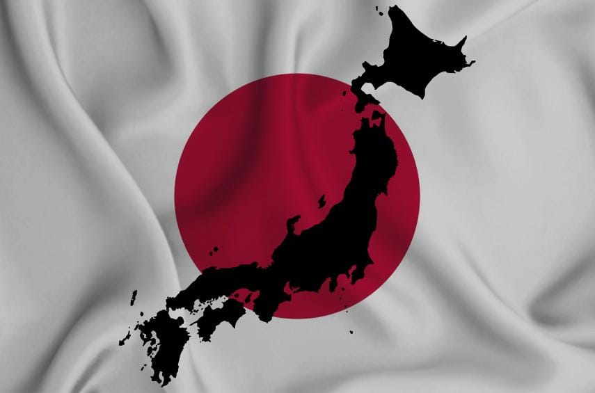

Como sabemos, o Japão é conhecido principalmente por sua culinária. Por ser formado por ilhas, sua alimentação é rica em peixes, moluscos e algas marinhas.
grande parte dos pratos também contém arroz, legumes e verduras. Além de todas as suas diversidades eles também fazem uso de outros ingredientes, como o shoyo, wasabi e missô.